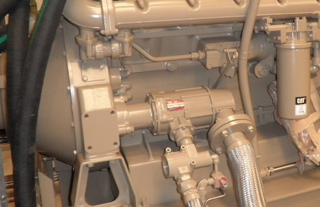

Request Quote
T100-B provides ultimate, inertia-engaged reliability for large engines up to 250 liters (15,000 CID). Long cranking cycles, contaminated air, and improper maintenance have almost no effect on the T100. The T100-B inertia-engaged starter is designed for your most critical applications.
Specifications
Ready For The World's Most Contaminated Air
The T100's vaneless turbine motor has no rubbing vanes to stick, swell, or wear out - wet air or gases have no effect on internal parts. Contaminatedair that clogs, damages and shuts down lesser units passes through TurboTwin's "open air path" design. Even sour natural gas is no match for the T100's corrosion-resistant interior. It all adds up to unmatched reliability - regardless of the conditions you operate in.
Aerodynamic Speed Contro Permits Longer Cranking…and No Burnoutl
Long crank cycles are a reality that can burn out the gearbox of lesser-grade starters. TurboTwin's design has eliminated the automatic trip valve (ATV) providing precise T100 Cat 3412aerodynamic control over motor speed. TurboTwin's lower gear ratios reduce starter workload and allow cool running that prevents starter burnout.
No Oil Means No Fugitive Emissions, Reduced Maintenance, And A Cleaner, More Reliable Starter
The T100 is grease-packed for life so there is no need for oil lubrication, no oily fugitive exhaust emissions, and no maintenance required.
More Power, Faster Starts
TurboTwin™ produces up to 25% more horsepower and superior turbine torque on a unit of air, and delivers faster cranking RPM for quick starts. T100 can provide eliable starts at pressures as low as 30psig making it ideal for field gas compressor applications and compressor rental fleet operators.